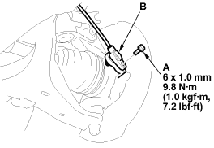
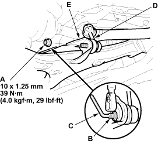
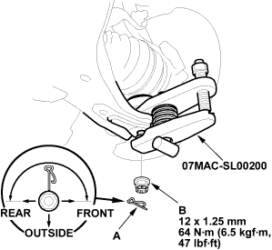
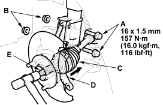

- Remove the flange bolt (A) and wheel sensor (B) from the knuckle. Do not disconnect the wheel sensor connector.

- Remove the flange nut (A) while holding the joint pin (B) with a hex wrench (C), and disconnect the stabiliser link (D) from the lower arm (E).


- Remove the clip (A) from the lower arm ball joint and remove the castle nut (B).
NOTE: During installation, insert the clip into the ball joint pin from the inside to the outside of the vehicle. The closed end of the clip must be in the range shown.

- Disconnect the lower arm from the knuckle using the special tool.
- Loosen the damper pinch bolts (A) while holding the nuts (B) and remove the bolts and nuts.

- Remove the driveshaft outboard joint (C) from the knuckle (D) by tapping the driveshaft end (E) with a plastic hammer while drawing the knuckle outward, then remove the knuckle.
NOTE: Do not pull the driveshaft end outward. The driveshaft joint may come off.